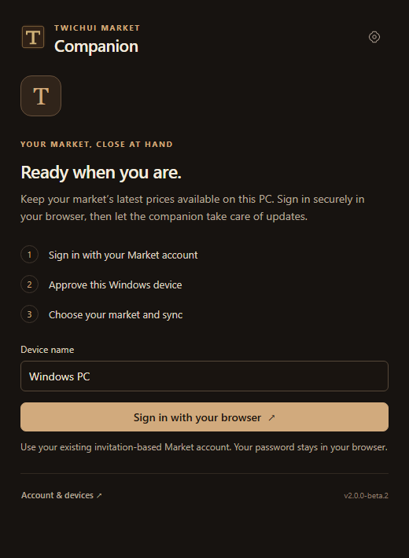
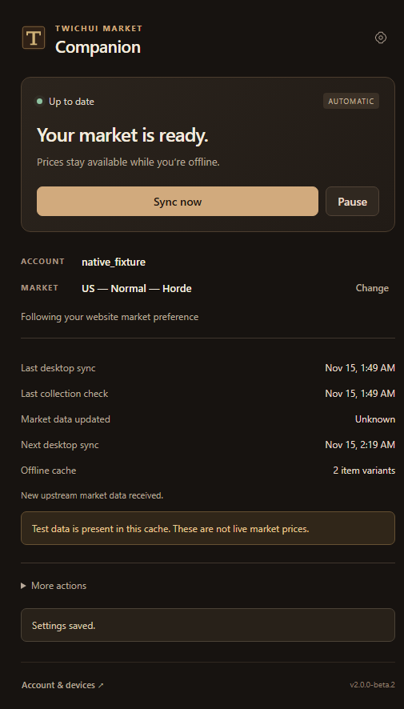
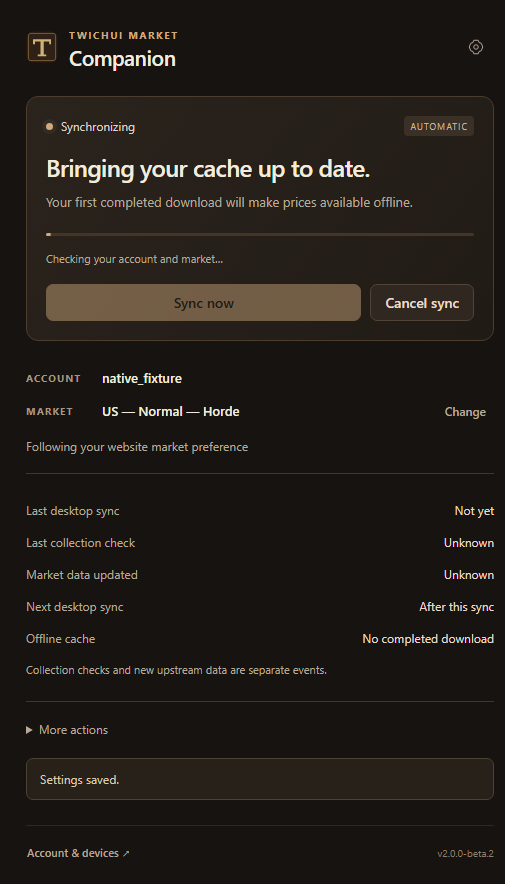
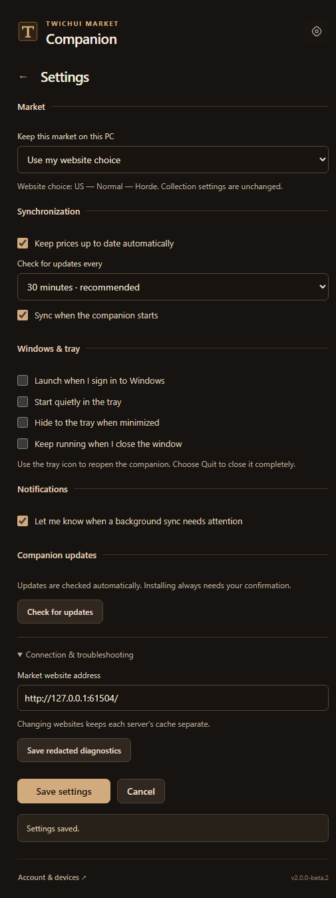
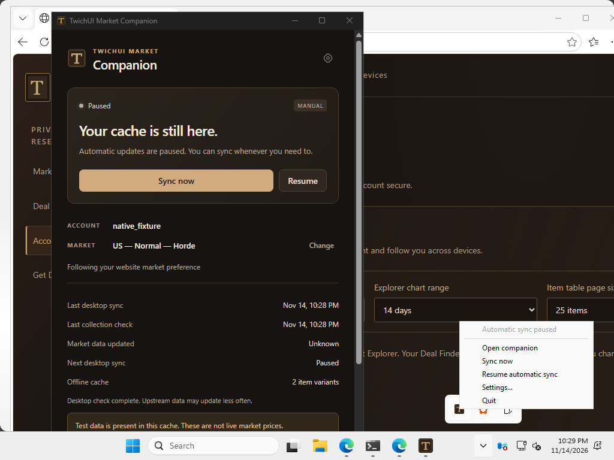
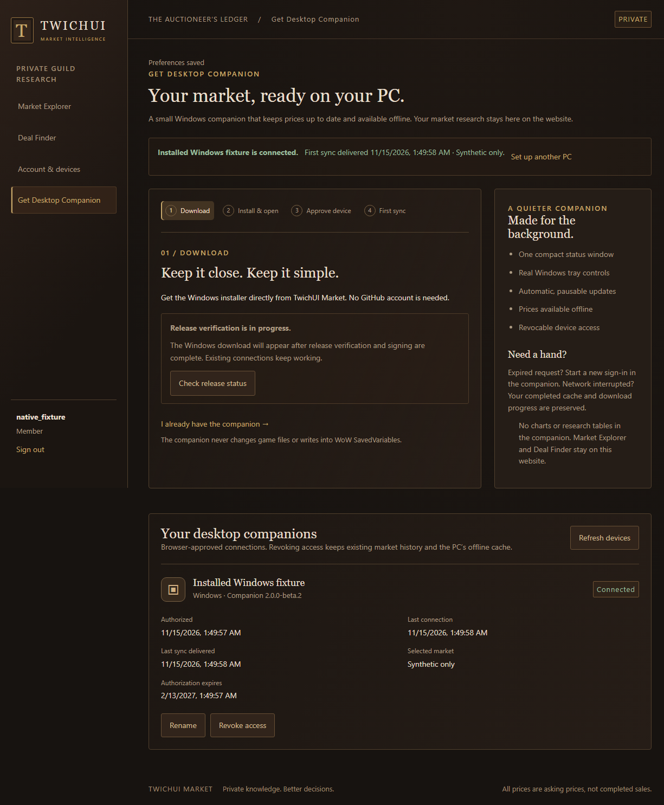
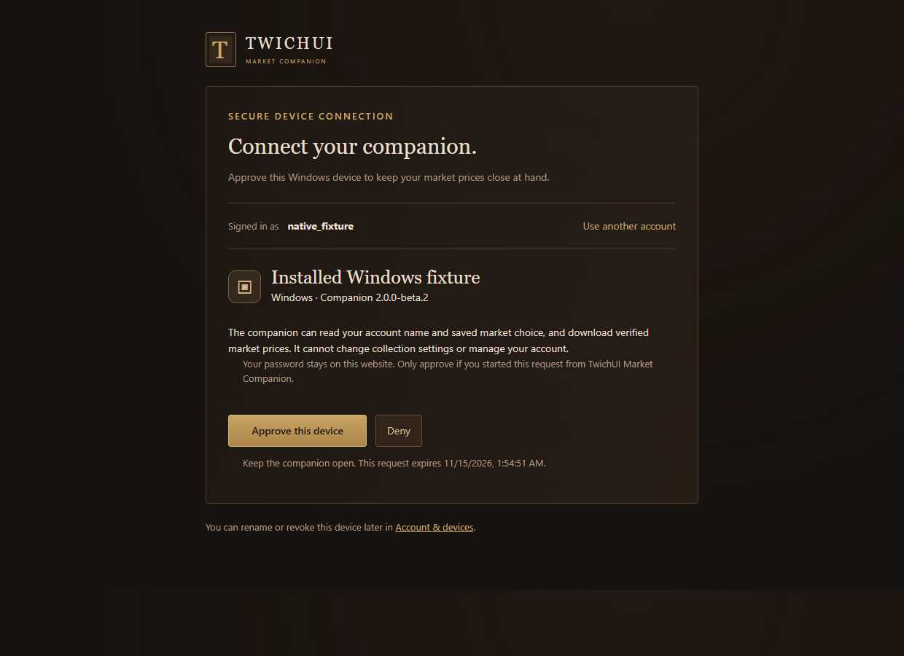
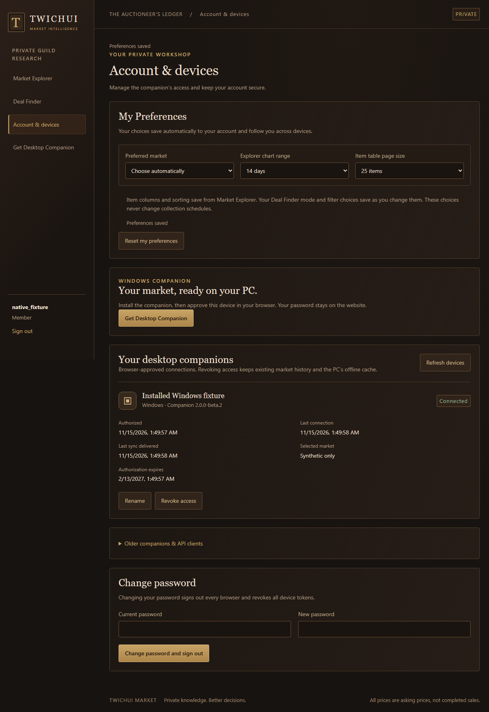

Frozen beta2 captures. The original approved design packet is preserved separately. Synthetic account/market data. Tray rendering verified; actions remain UNVERIFIED. Full-page images include scrollable content. No production promotion.
Installer sourcec7bad2f / Windows43664574901; exact signed updater acceptance43665403770. No publication or deployment approval. Actual OS tray source2d66026 / Windows43647891422. Click any image to inspect its original file. See provenance.json and the accompanying review/checklist documents.







